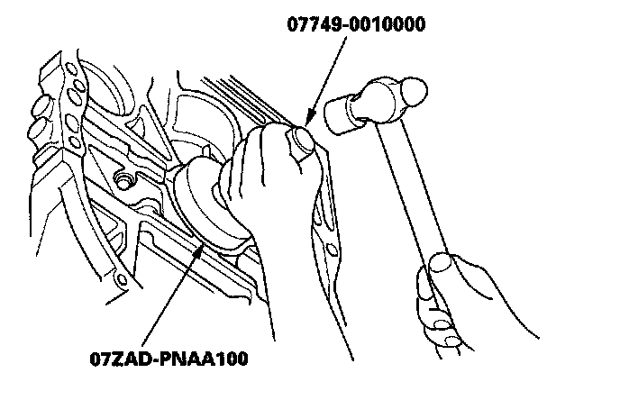
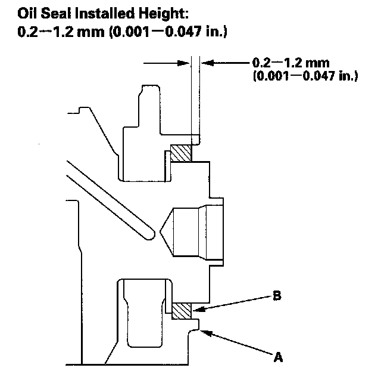

Rear Crankshaft Main Bearing Seal: Service and Repair
Transmission End Crankshaft Oil Seal Installation - In CarSpecial Tools Required
^ Driver 07749-0010000
^ Oil seal driver attachment 96 07ZAD-PNAA100
1. Remove the transmission.
2. Remove the pressure plate, clutch disc, and flywheel.
3. Clean, and dry the crankshaft oil seal housing.
4. Use the special tools to drive a new oil seal squarely into the engine block to the specified installed height.

5. Measure the distance between the engine block (A) and oil seal (B).

6. Install the flywheel, clutch disc, and pressure plate.
7. Install the transmission.